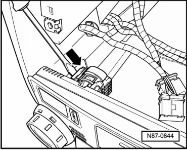

Removal and Replacement
Manual A/C System and Climatronic Control Module
Removing
Before working on electrical system, remove relevant fuses
- The radio or navigation unit must be removed first depending on which option.
- Depending on which type of seat is fitted heated or non-heated unclip either the cover or both outer switches from the switch panel.
• The switch panel has been removed completely for better illustration.
- Press control unit locking device in direction of arrow and slide control unit out forward.

- Separator connectors.
Installing
Installation is carried out in the reverse order, when doing this note the following:
• When installing the front operating unit ensure that no force is exerted on temperature and air distribution (Econ) regulators. Excessive force may break the predetermined breaking point impact protection of the rotary regulators.